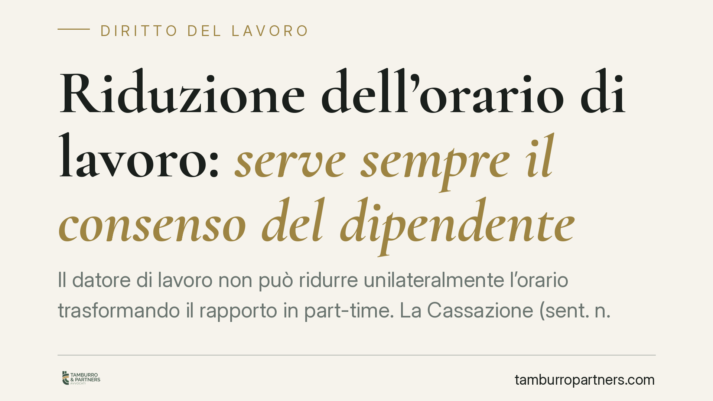

Riduzione dell'orario di lavoro: serve sempre il consenso del dipendente
Il datore di lavoro non può ridurre unilateralmente l'orario trasformando il rapporto in part-time. La Cassazione (sent. n. 16089/2014) ribadisce che serve sempre il consenso scritto del singolo lavoratore, non sostituibile da un accordo sindacale. E il rifiuto non legittima il licenziamento. Un principio che pesa sulle riorganizzazioni aziendali e sulla tutela della retribuzione.

Il caso e il principio affermato
La trasformazione del rapporto di lavoro da tempo pieno a tempo parziale incide direttamente su un elemento essenziale del contratto: la quantità di prestazione e, di conseguenza, la retribuzione. Per questo la Corte di Cassazione, Sezione Lavoro, con la sentenza n. 16089 del 14 luglio 2014, ha ribadito un principio consolidato: il passaggio al part-time richiede sempre il consenso scritto del singolo lavoratore.
Nessun accordo collettivo, nessuna intesa con le organizzazioni sindacali può sostituire questa volontà individuale. L'orario di lavoro concordato è parte integrante del contratto e non può essere modificato in peggio con una decisione unilaterale del datore.
Inquadramento normativo
Il riferimento è l'art. 5 del D.lgs. 61/2000, la disciplina di base del lavoro a tempo parziale. La norma stabilisce che la trasformazione del rapporto da tempo pieno a part-time deve risultare da atto scritto e presuppone l'accordo delle parti. In altri termini: il consenso del lavoratore è requisito di validità, non una semplice formalità.
La ratio è chiara. Il part-time comporta una riduzione proporzionale della retribuzione. Consentire al datore di imporlo significherebbe permettere una decurtazione dello stipendio per volontà di una sola parte, in violazione del principio di intangibilità delle condizioni economiche pattuite.
La Cassazione aggiunge un secondo punto decisivo: il rifiuto del lavoratore di accettare il part-time non costituisce giustificato motivo di licenziamento. Il dipendente che dice no a una proposta di riduzione oraria esercita un diritto, non commette un inadempimento. Un eventuale recesso fondato su quel rifiuto è illegittimo.
Implicazioni pratiche
Per il datore di lavoro il messaggio è netto. La riorganizzazione aziendale, anche quando giustificata da esigenze economiche reali, non può passare dalla riduzione unilaterale dell'orario dei singoli. Se l'obiettivo è contenere i costi del personale, occorre percorrere strade diverse e tipizzate dall'ordinamento: accordi individuali realmente consensuali, strumenti di integrazione salariale, o le procedure previste per la riduzione del personale, con le relative garanzie.
Per il lavoratore, invece, la tutela è solida. Una comunicazione aziendale che annuncia la trasformazione in part-time senza un accordo firmato è priva di effetti. La prestazione resta quella originaria a tempo pieno e, con essa, il diritto alla retribuzione intera.
Attenzione però a un aspetto delicato: il consenso può anche essere tacito o desumersi da comportamenti concludenti? La giurisprudenza richiede la forma scritta proprio per evitare incertezze. Accettare di fatto il nuovo orario, continuare a lavorare alle condizioni ridotte senza contestare, può indebolire la posizione del lavoratore in un eventuale contenzioso. Per questo la reazione tempestiva e documentata è importante.
Cosa fare in concreto
Se sei un lavoratore:
- Non firmare alcun accordo di trasformazione in part-time sotto pressione o senza averne valutato gli effetti economici.
- Contesta per iscritto, con comunicazione formale, ogni riduzione oraria imposta unilateralmente, dichiarando la tua disponibilità a rendere la prestazione a tempo pieno.
- Conserva buste paga, comunicazioni aziendali e turni di lavoro: documentano l'orario effettivo e le eventuali decurtazioni.
Se sei un datore di lavoro:
- Verifica che ogni passaggio al part-time sia supportato da un accordo individuale scritto e firmato dal singolo dipendente.
- Non fondare mai un licenziamento sul rifiuto del lavoratore di accettare la riduzione oraria: valuta con un consulente gli strumenti legittimi di gestione del costo del lavoro.
In entrambi i casi, consigliamo di far esaminare la documentazione contrattuale prima di assumere decisioni che incidono su retribuzione e stabilità del rapporto. Una valutazione preventiva riduce il rischio di contenziosi e di atti invalidi.
Conclusione
Il principio è stabile e tutela un bene primario: la certezza delle condizioni economiche pattuite. L'orario di lavoro è parte del contratto, e il contratto si modifica in due, non da soli. Chi intende ridurre la prestazione deve ottenere un consenso reale, informato e messo per iscritto.
---
*Contributo informativo a cura di Tamburro & Partners - Avv. Giuseppe Tamburro. Non costituisce parere legale.*
Ogni storia di lavoro ha i suoi tempi.
Se gestisci HR e vuoi un confronto su contenzioso, ispezioni o licenziamenti, scrivi allo studio. Ti rispondiamo entro un giorno lavorativo.